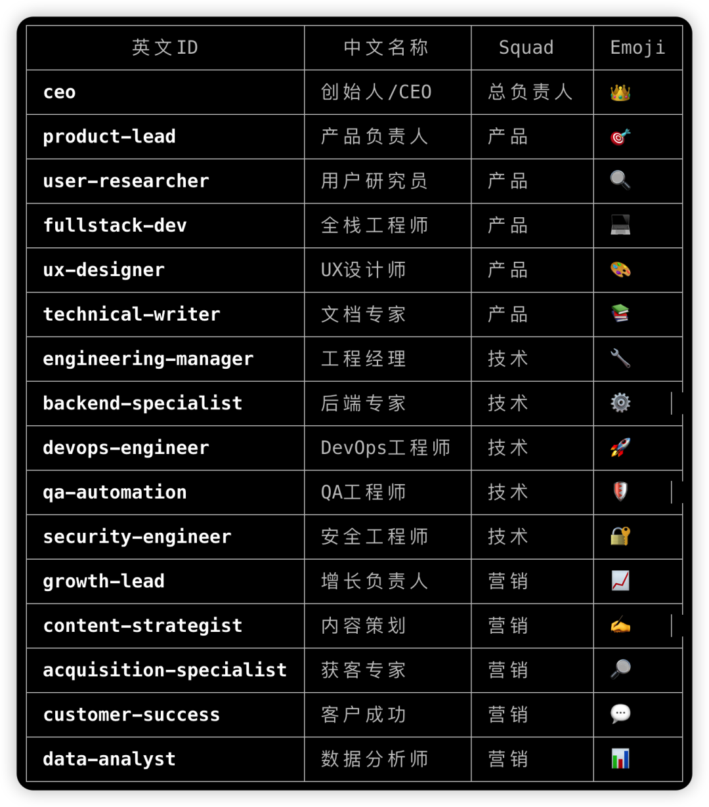
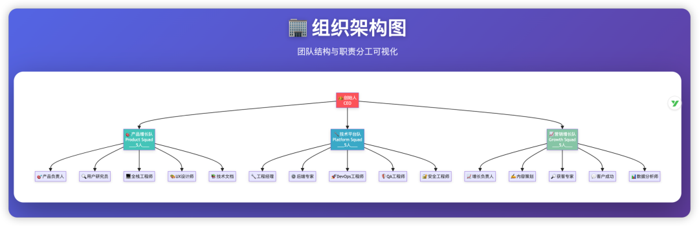
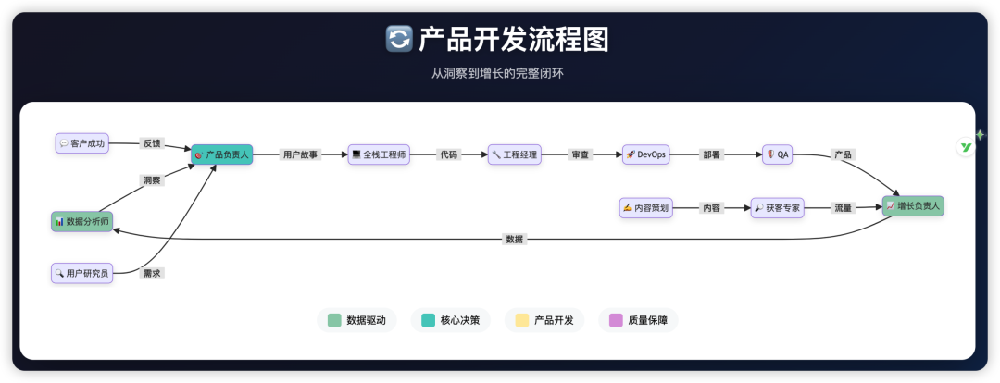
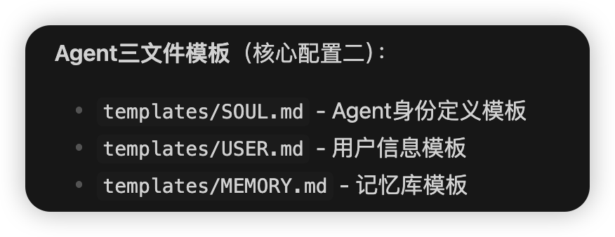
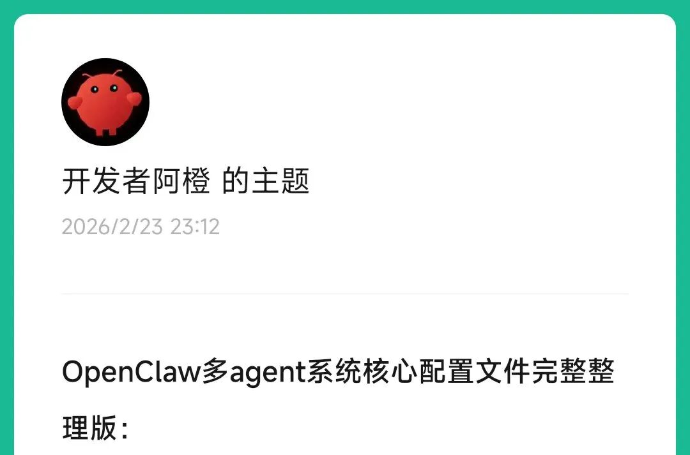
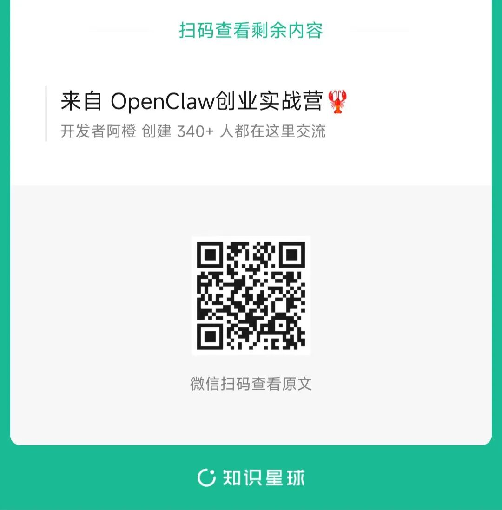
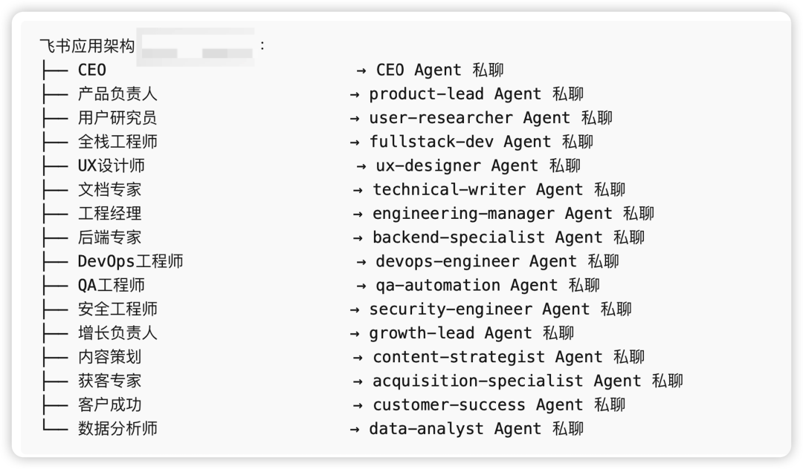
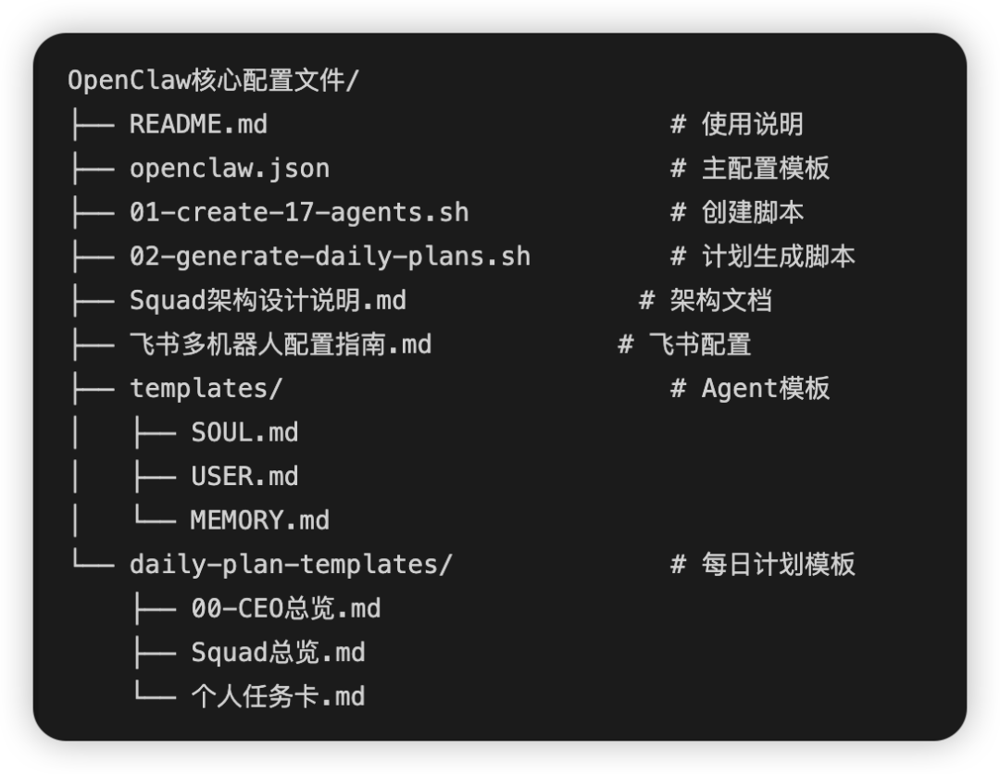
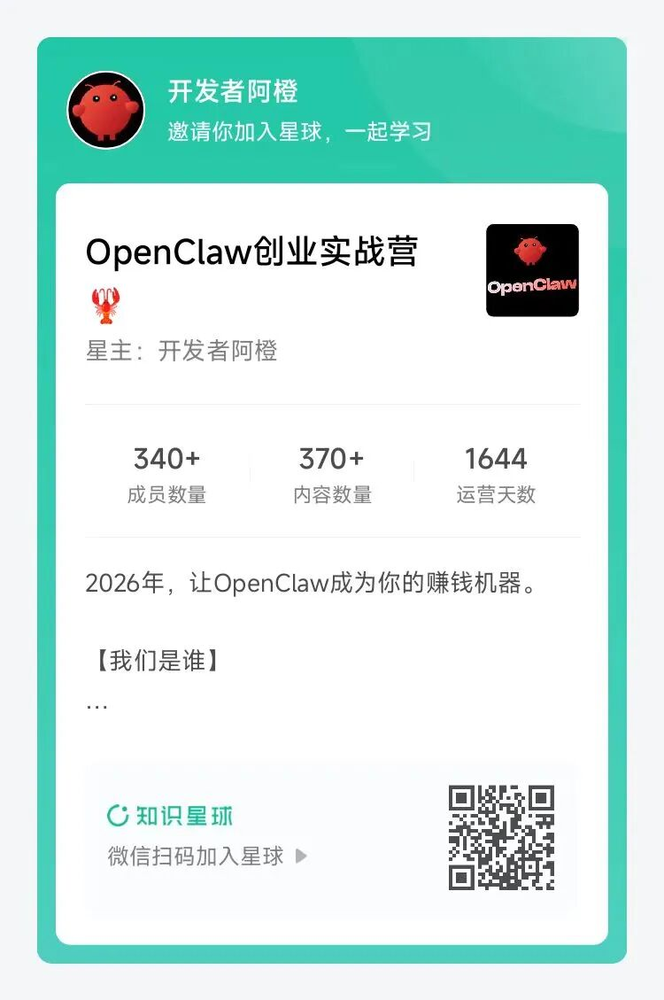

最近OpenClaw大火，成为2026年开年王炸！
你有没有想过：如果用OpenClaw打造16个数字员工，并且能像一个完整的互联网初创公司那样运转，将会发生什么？
其实关键的问题是：如何让这16个AI像真人团队一样协同工作？
这就是我今天要分享的核心：
OpenClaw多Agent协同系统的配置精髓。
痛点：单个agent解决不了所有业务
很多人用AI，就是一个ChatGPT对话。有问题问一下，有需求丢给它。但假如当你需要处理一家跨境出海公司的全盘业务时：独立站运营、SEO优化、英文内容创作、Product Hunt发布、海外社媒运营、多时区客服——单个AI根本不够用。
核心问题不在于AI的能力，而在于：如何组织多个AI，让他们像一个真实团队那样分工协作？
解决方案：Squad架构设计
我在OpenClaw项目（我用 OpenClaw 搞了家16人的公司：全员AI，24小时无休！）中，把16个数字员工组织成了3个「Squad」（战术小队）：

设计精髓：每个战术小队都对业务结果负责，而不是完成任务。

这不是简单的职能分组，而是模仿Spotify的Squad模式：扁平、跨职能、端到端问责。
核心配置一：Agent间通信能力
这是最关键的配置。在openclaw.json中：
"tools": {
"agentToAgent": {
"enabled": true,
"allow": [所有17个agent的ID],
"maxRecursion": 3
}
}什么意思？
• enabled: true— 允许agent之间直接对话• maxRecursion: 3— 最多3层递归调用（避免无限循环）
这样，数据分析师可以把Product Hunt竞品情报传给内容策划，内容策划可以找获客专家分发到Twitter/Reddit/Ins，获客专家可以把转化数据反馈给增长负责人——形成一个完整的出海协作链。

核心配置二：每个AI的三文件身份
为什么需要这三个文件？
因为AI需要知道：我是谁、我要对谁负责、我在团队中处于什么位置。没有这些，AI就是一堆乱指令；有了这些，AI就是一个有角色认知的「数字员工」。

核心配置三：三层工作流系统
每天早上8点，系统自动生成21个文档：
L1: CEO总览 (1个)
├── 当日核心目标
├── 各Squad关键里程碑
└── 风险预警
L2: Squad总览 (3个)
├── 产品增长队目标
├── 技术平台队目标
└── 营销增长队目标
L3: 个人任务卡 (17个)
├── 具体任务
├── 输入依赖
└── 产出标准执行时间线：
• 08:00-09:00 数据层先执行（分析师、研究员、客户成功） • 09:00-18:00 其他agent并行执行 • 18:00-19:00 CEO复盘总结
💡 想要完整的配置文件和自动化脚本？
在我的知识星球「OpenClaw创业实战营」里，有完整的：
• openclaw.json配置模板• 17个数字员工的自动创建脚本 • 三层工作流的生成脚本 • 每日任务卡模板 星球成员可以直接复制使用，快速搭建自己的AI初创团队。


核心配置四：多机器人通信渠道
每个数字员工都有独立的飞书机器人账号：
"channels": {
"feishu": {
"accounts": {
"ceo": { "appId": "...", "agentId": "ceo" },
"product-lead": { "appId": "...", "agentId": "product-lead" },
// ... 共17个
}
}
}为什么每个AI都要有独立的机器人？
因为你可以：
• 私聊任意一个数字员工，派发具体任务 • 建群让多个agent协作（比如：产品负责人+全栈工程师+UX设计师） • 在群里@某个agennt，让它响应

这就是真正的「多机器人协同」，而不是一个机器人处理所有事情。OpenClaw核心配置文件如下，星球成员可以直接下载，一键配置：

这套系统运行起来是什么效果？
下面是我现在一个人在做的一个跨境出海的SaaS产品：
每天早上8点，当我还在刷牙时：
• 📊 数据分析师已经在Product Hunt、Reddit、Indie Hackers上搜集了昨晚的出海竞品动态，整理出一份《每日出海情报简报》 • 💬 客户成功汇总了Trustpilot、App Store、Google Play上的新评价，以及邮箱里的英文用户反馈，提炼出Top 5用户痛点 • 🔍 用户研究员分析昨天Google Analytics、Mixpanel的数据，发现美国用户的激活率提升了12%，但欧洲用户的付费转化下降了8%
9点开始，当我打开电脑时：
• ✍️ 内容策划基于出海趋势，已经写好3篇LinkedIn英文帖子和1个YouTube脚本 • 💻 全栈工程师根据产品需求，正在优化独立站的Lighthouse评分和移动端体验 • 🔎 获客专家把内容分发到Twitter/X、LinkedIn、Product Hunt，并在Reddit相关的subreddit里发起讨论 • 🌐 SEO专家监控Google关键词排名，发现出海SaaS这个词排名从第15升到了第8
下午时段，覆盖欧美工作时间：
• 💬 客户成功实时回复来自纽约、伦敦、柏林的英文咨询邮件 • 🛠️ DevOps监控独立站和API的可用性，自动处理告警
晚上6点，我准备下班时：
• 👑 CEO收到一份完整日报：今日新增120个美国用户，Product Hunt上有8个upvote，3个用户反馈了同一个bug • 系统自动生成明天的计划：上午修复那个bug，下午准备Product Hunt发布材料 • 所有文档自动归档到Notion和飞书知识库
我作为真人CEO，只需要做一件事：审阅结果，做关键决策。
最核心的是什么？
如果只能选一个核心，我认为是：Squad（战术小队）架构设计 + Agent间通信的组合。
• Squad架构提供了组织结构——谁和谁是一伙的，谁对什么负责 • Agent通信提供了协作能力——数据和任务如何在AI之间流动
其他的三层文档、三文件身份、多机器人配置，都是为了支撑这两个核心设计的实现。
真实案例的启发
这套系统模仿了Spotify工程师文化的Squad（战术小队）模式，但是我通过AI agent复刻并实现了自动化执行。
Spotify用真人团队做到的跨职能协作，我们现在用AI数字员工也能做到——而且成本更低、响应更快、24小时覆盖全球时区。
🚀 加入「OpenClaw创业实战营」知识星球，你将获得：
1. 完整的 openclaw.json配置文件模板（含17个Agent定义）2. 一键创建17个数字员工的Shell脚本 3. 每日工作计划自动生成脚本 4. 每个Agent的SOUL.md/USER.md/MEMORY.md模板 5. 飞书多机器人配置完整说明文档 6. Squad架构设计原理解析 7. 跨境出海场景的实战经验和优化技巧 这不是一套理论，而是我正在真实项目中运行的系统。

写在最后
AI时代的一人公司，不是一个人单打独斗，而是一个人指挥一支Agent军队。
关键不在于你用了多少个AI工具，而在于：你是否有一套让多个Agent协同工作的架构和流程。
OpenClaw的这个Squad（战术小队）模式，或许可以给你一些启发。
想深入了解这套系统的具体实现？
点击阅读原文加入我的知识星球「OpenClaw创业实战营」，获取所有配置文件、脚本和详细文档。让我用实战经验，帮你快速搭建自己的AI数字员工团队，让你的业务自动运转起来。